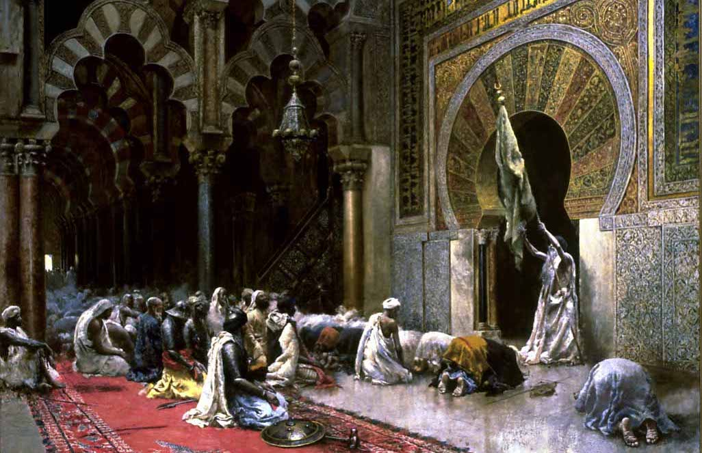
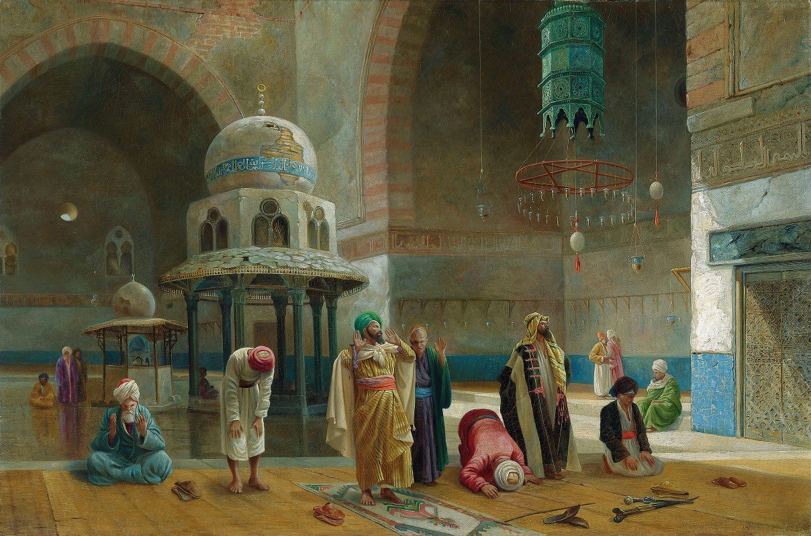
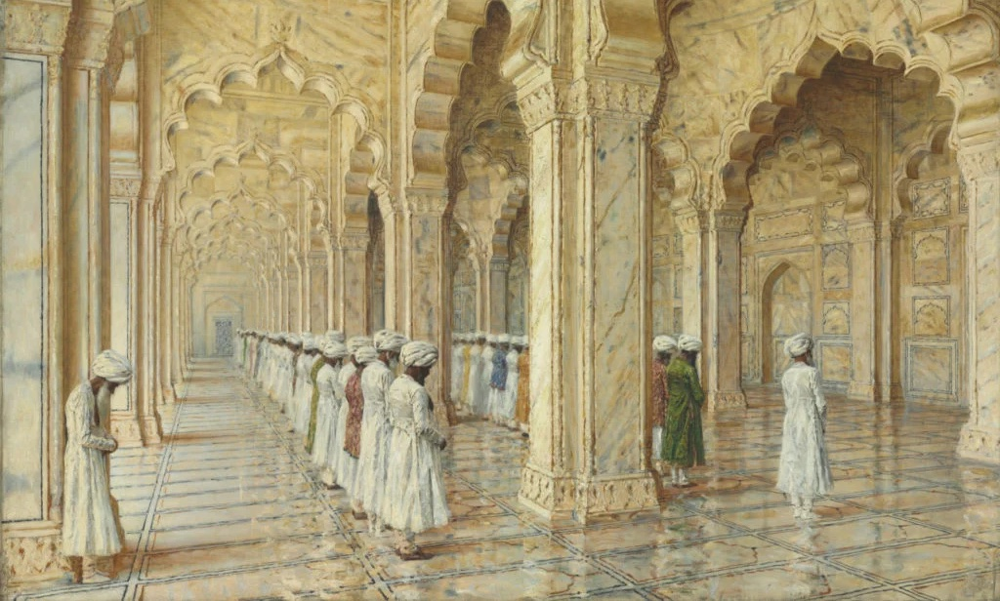

----------

Eid ul Fitr is one of the most widely celebrated Islamic festivals,
which marks the end of the holy month of Ramadan. On this day, Muslims
show their gratitude towards Allah for offering them health and endurance
to get through the long fasting period of Ramadan. Muslims offer prayer
and thank Allah for His blessings and rewards. Eid ul Fitr 2023 is highly
anticipated festival as it is celebrated to promote brotherhood and
togetherness among the Muslims. On Eid ul Fitr, people organize delicious
feasts, wear new and vibrant clothes, visit family members and exchange Eid greetings.
Meaning:

As per Eid ul fitr definition, it means the 'Feast of Breaking the Fast'.
Eid ul Fitr is the first of the two official holidays in Islam. Falling on the
first day of the Islamic calendar's month of Shawwal, Eid ul Fitr is a festival
organized with massive feasts all around the world to celebrate the gifts and blessings of Allah.
Eid ul Fitr symbolizes virtues like patience, piety, godliness and fortitude. It is a day of celebration as those who observe the fast during Ramadan receive the rewards of rigorous spiritual discipline and month-long worship. On this holy day, Muslims also show their gratitude to Allah for opening the doors of forgiveness and mercy through the sacred month of Ramadan.
In addition to being a time for reflection, fresh beginnings and rejoicing with loved ones, Eid ul Fitr is also a reminder to be kind to those who are less fortunate. The day reminds Muslims to embrace people from social and economic circles and share the joy of festivities with the underprivileged, the poor and the neglected. Prophet Muhammad (PBUH) himself used to make sure that all the needy, the downtrodden and widows were able to share the joys of Eid ul Fitr. The day is when all Muslims should count their blessings and help those who are in need of it.
Eid ul Fitr symbolizes virtues like patience, piety, godliness and fortitude. It is a day of celebration as those who observe the fast during Ramadan receive the rewards of rigorous spiritual discipline and month-long worship. On this holy day, Muslims also show their gratitude to Allah for opening the doors of forgiveness and mercy through the sacred month of Ramadan.
In addition to being a time for reflection, fresh beginnings and rejoicing with loved ones, Eid ul Fitr is also a reminder to be kind to those who are less fortunate. The day reminds Muslims to embrace people from social and economic circles and share the joy of festivities with the underprivileged, the poor and the neglected. Prophet Muhammad (PBUH) himself used to make sure that all the needy, the downtrodden and widows were able to share the joys of Eid ul Fitr. The day is when all Muslims should count their blessings and help those who are in need of it.
History:

The festival was first started by Prophet Muhammad (PBUH) in 624 CE
to celebrate the victory in the battle of Badr. Since then, Eid ul
Fitr has become one of the most significant days in Islam. Stories
about the origin of Eid ul Fitr suggests that the festivities spread
during the migration of Prohpet Muhammad (PBUH) to Madinah from Makkah.